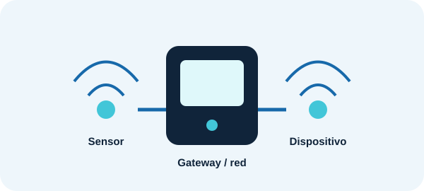

¿Qué es el IoT?
El Internet de las cosas (IoT) es la conexión de objetos físicos a una red para que puedan recopilar, enviar y recibir datos. Estos objetos incorporan sensores, programas y conexión a internet o a una red local.
Ejemplo: una bombilla inteligente puede encenderse desde un celular y un sensor puede medir la temperatura y enviar el dato a una aplicación.

Funcionamiento
¿Cómo funciona el Internet de las cosas?
Sensor
Detecta temperatura, movimiento, luz u otro dato.
Conexión
Envía la información mediante una red.
Plataforma
Recibe y procesa los datos.
Decisión
Aplica una regla programada.
Acción
Activa una luz, alarma u otro equipo.
Ejemplos
IoT en el hogar
💡
Bombilla inteligente
Se controla desde una aplicación o mediante una automatización.
🌡️
Sensor de temperatura
Mide el ambiente y transmite la información.
🚪
Sensor de puerta
Puede avisar cuando una puerta se abre.
Beneficios y cuidados
Ventajas y riesgos
Ventajas
- Comodidad y automatización.
- Ahorro de energía.
- Supervisión a distancia.
- Mejor seguimiento de procesos.
Riesgos y prevención
- Acceso no autorizado: usar contraseñas seguras.
- Robo de datos: proteger la privacidad.
- Fallas: mantener equipos actualizados.
- Red insegura: configurar correctamente el Wi-Fi.